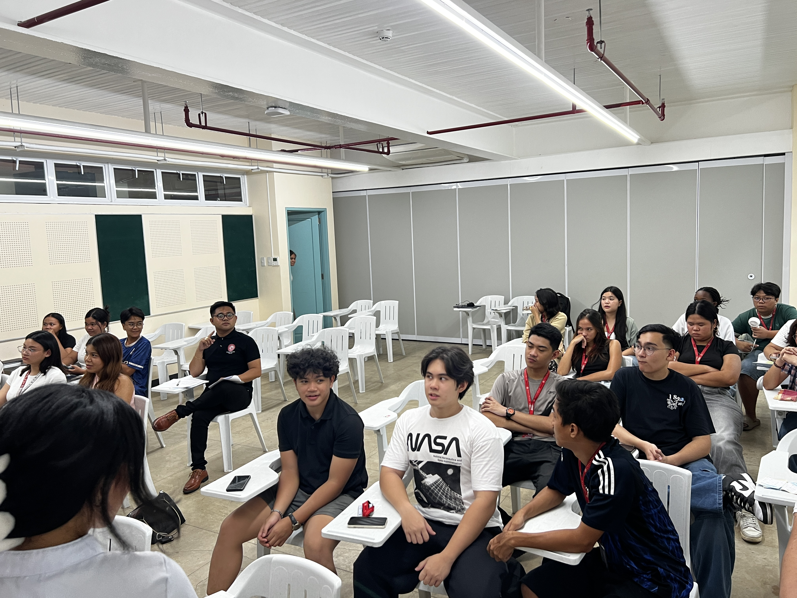
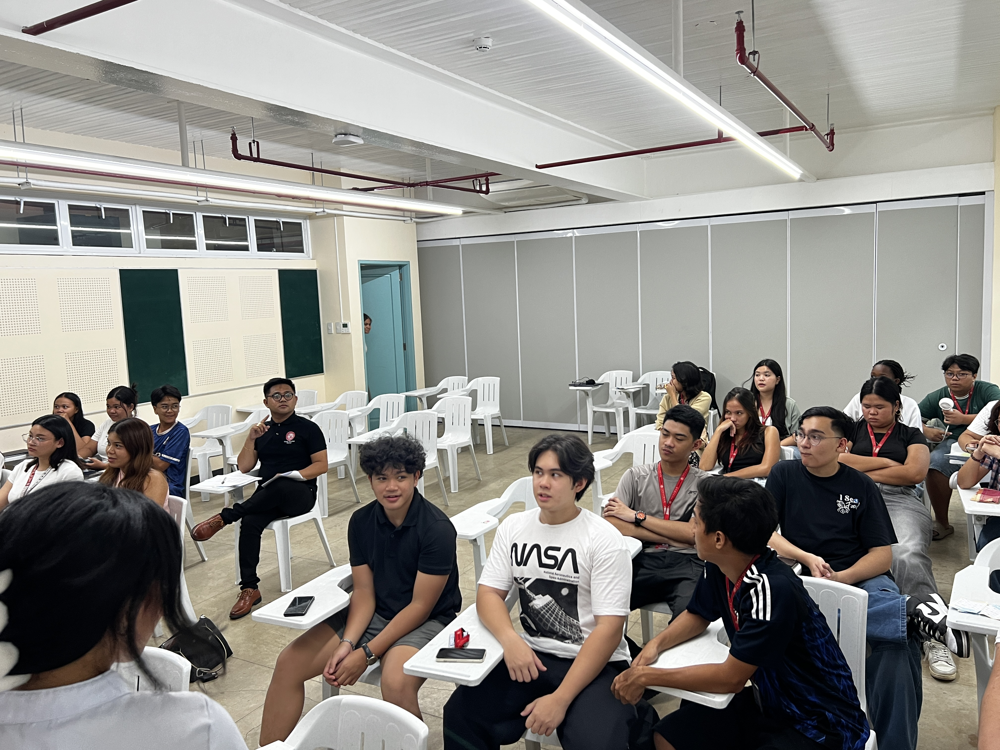

Class Demonstration Reflection Page
The Class Demonstration was one of the most significant learning experiences of this course. It provided me with the opportunity to apply educational concepts in a simulated teaching environment and to understand firsthand what it means to facilitate learning.
Standing in front of the class challenged me to step out of my comfort zone and develop confidence in communication and classroom engagement. I learned that teaching is not merely about delivering content but about connecting with learners—understanding their differences, adjusting to their pace, and using strategies that support various learning styles.
Our group faced several technical challenges during the presentation, such as the malfunctioning of our remote and visual aids. However, these unexpected issues taught us to stay composed, think critically, and adapt quickly. It was a real-world reminder that flexibility and composure are essential attributes of an effective teacher.
Through this experience, I gained a deeper appreciation for the role of educators. Teaching requires not only knowledge and preparation but also creativity, empathy, and resilience. It reinforced my understanding that learning is a shared process—both teacher and student grow together through meaningful interaction.
 
